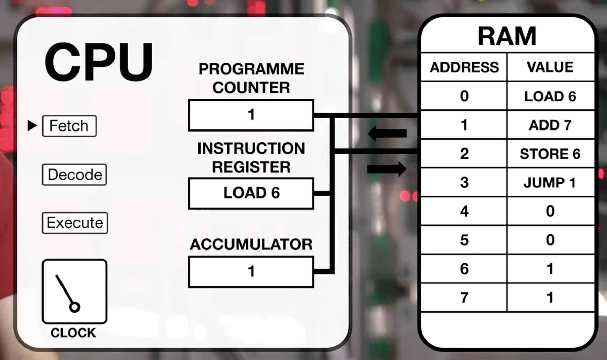

Il Grande Viaggio
Dalla Cucina all'Hardware
Una narrazione completa dei fondamenti dell'architettura dei calcolatori: dal ciclo di clock, alla gerarchia della memoria, fino ai formati binari delle istruzioni a 32 bit.
Il Motore del Computer
Abbiamo usato la metafora della cucina per rendere visibili concetti invisibili: la CPU è la nostra brigata di cucina, la RAM è il frigorifero e il Disco Fisso è il supermercato.
Isoliamo il "cuore": Il Clock della CPU
Lasciamo da parte per un attimo la RAM, l'architettura e il software, ed entriamo nel dettaglio del "metronomo" che scandisce l'intero flusso dei dati.
Il Clock non è un programma e, originariamente, non era nemmeno dentro il processore. È un minuscolo cristallo di quarzo saldato sulla scheda madre. Quando viene alimentato elettricamente, vibra per proprietà fisica in modo costante ed estremamente preciso.
Questa vibrazione meccanica viene trasformata in un segnale elettrico intermittente, una cosiddetta onda quadra. Funziona come un interruttore acceso e spento continuamente: Corrente (1) - Niente Corrente (0) - Corrente (1)...
I circuiti del processore sono inerti e privi di motore interno. Il Clock è il metronomo del sistema: ad ogni onda di corrente (Tick), spinge gli elettroni un passo in avanti nei labirinti di silicio. Senza battito, la CPU si congela all'istante.
L'unità di misura è l'Hertz ("battiti al secondo"). Poiché le velocità odierne sono inimmaginabili, usiamo il prefisso Giga (Miliardi). Un processore da 3 GHz riceve esattamente 3 miliardi di impulsi elettrici ogni singolo secondo.
Il Periodo indica quanto dura un singolo battito. A 1 GHz, un singolo Tick dura esattamente 1 nanosecondo (un miliardesimo di secondo). È il tempo limite che la CPU ha per far viaggiare l'elettricità nel circuito prima del battito successivo.
Perché non andiamo a 100 GHz?
• Calore: Più scosse equivalgono a maggiore attrito degli elettroni contro gli atomi. Oltre i 5-6 GHz, il chip si fonde letteralmente.
• Velocità della luce: Se il periodo è troppo breve, l'elettricità non fa in tempo a percorrere il circuito prima del Tick successivo, mandando tutto in tilt.
CPI: Cicli per Istruzione
Il parametro CPI (Clock Cycles per Instruction) indica il numero medio di cicli necessari alla CPU per completare l'esecuzione di un'istruzione. Ogni tipo di istruzione ha un proprio costo in cicli (es: i salti o le letture in RAM hanno costi superiori alle semplici addizioni).
La formula fondamentale delle prestazioni
Il Lavoro Quotidiano: Ciclo e Registri
Ad ogni battito di metronomo, ogni singolo Core esegue una coreografia perfetta divisa in tre fasi: Fetch (Recupero), Decode (Decodifica) ed Execute (Esecuzione).
Schema Logico: Ciclo di Clock e Fetch-Decode-Execute

Rappresentazione dei componenti Von Neumann: il Program Counter (PC), l'Instruction Register (IR), l'Accumulatore, e la RAM con istruzioni codificate (Fetch-Decode-Execute guidato dal Clock).
Le 7 fasi del ciclo Fetch-Decode-Execute
Fetch dell'istruzione: Leggi la prossima istruzione dalla memoria centrale e memorizzala nell'Instruction Register (IR).
Avanzamento PC: Incrementa il Program Counter (PC) in modo da puntare all'istruzione successiva.
Decodifica: Determina il tipo di istruzione appena caricata.
Individuazione indirizzo: Se l'istruzione fa riferimento a una cella in RAM, calcola dove si trova in memoria.
Caricamento operandi: Preleva il dato richiesto (se presente) e posizionalo nei registri interni della CPU.
Esecuzione: Esegui l'elaborazione effettiva dell'istruzione tramite l'ALU.
Ripetizione: Torna alla fase 1 per ricominciare il ciclo.
Simulazione logica: interprete del ciclo
L'unità di controllo esegue materialmente questo ciclo continuo. Possiamo modellare il suo comportamento logico come un ciclo software infinito (scritto qui in Java):
publicstaticvoid interpret(int memory[], int starting_address) { PC = starting_address; while (true) { instr = memory[PC]; // 1. FETCH PC = PC + 1; // 2. INCREMENTO PC instr_type = get_instr_type(instr); // 3. DECODE data_loc = find_data(instr, instr_type);// 4. CALCOLO RAM if (data_loc >= 0) { data = memory[data_loc]; // 5. LOAD OPERANDI } execute(instr_type, data); // 6. EXECUTE & RIPETI } }
I Registri (Il bancone della cucina)
Per farlo senza impazzire, la CPU usa dei minuscoli banchi di memoria interni chiamati Registri:
- PC (Program Counter): È il segnalibro. Ricorda quale riga di codice deve essere eseguita subito dopo.
- MAR (Memory Address Register): Il fattorino degli indirizzi. Il PC gli passa il numero (l'indirizzo in RAM) di dove si trova il dato da recuperare.
- MDR (Memory Data Register): Il cesto della spesa. I dati presi dalla RAM arrivano fisicamente qui dentro.
- CIR (Current Instruction Register): Il tagliere. L'istruzione grezza passa dall'MDR al CIR affinché la CPU la decodifichi e la esegua.
L'Assembly RISC-V: Il linguaggio della macchina
Tutte queste operazioni fisiche sono controllate dal codice Assembly (come il RISC-V). Questo linguaggio mette a disposizione del programmatore 32 registri visibili sul bancone per fare i calcoli.
Il processore usa MAR e MDR per prendere dati dalla RAM.
Il processore usa la calcolatrice interna (ALU) sui dati presenti sul bancone.
Il processore devia il flusso modificando il PC per fargli saltare righe di codice.
L'Organizzazione dello Spazio
Per far funzionare un computer senza colli di bottiglia, i dati vengono organizzati su diversi livelli fisici, dal più piccolo e veloce al più capiente e lento.
La Gerarchia della Memoria
- 0. Numeri immediati: Massima velocità (viaggiano a cavallo dell'istruzione).
- 1. Registri CPU (< 1 ns): Il tagliere. L'unico posto dove i dati possono essere manipolati.
- 2. Cache L1, L2, L3 (2-15 ns): La dispensa sotto il bancone. Memoria ultra-veloce saldata sulla CPU.
- 3. RAM (~50 ns): La cella frigorifera. Il magazzino diviso logicamente in Stack e Heap.
- 4. Disco Fisso / SSD (> 50k ns): Il supermercato. Spazio immenso ma troppo lento per la CPU.
Stack, Heap e il Collo di Bottiglia
Gestita dal registro SP, cresce verso il basso. Serve per le chiamate a funzione e variabili temporanee. Rischio: Stack Overflow.
Porzione elastica per dati pesanti e persistenti. Richiede allocazione manuale e rischia il Memory Leak.
Il Principio Load / Store e l'Architettura
Nella memoria RAM non avviene nessun calcolo. L'ALU lavora solo sui Registri. Da qui nascono due filosofie costruttive opposte (ISA):
Esempi: RISC-V, ARM (Apple Silicon). Vocabolario ridotto, comandi semplici. Hardware fulmineo e freddo. Obbligo di usare Load/Store espliciti.
Esempi: Intel, AMD. Vocabolario ricco. Permette operazioni direttamente su RAM, ma costringe la CPU ad avere un Traduttore Hardware interno (Decoder) che scalda e consuma molto.
32 vs 64 bit e Little Endian
Cosa significa veramente avere un processore a 64 bit? Non è una misura di velocità, ma della "larghezza" fisica dei componenti interni.
- Grandezza Registri: Un'ALU a 64 bit calcola numeri giganteschi in un colpo solo.
- Limite RAM: A 32 bit, le combinazioni si fermano a 4 Miliardi (massimo 4 GB di RAM indirizzabili). A 64 bit esplodono a 18,4 Exabyte (memoria virtualmente infinita).
Anatomia della RAM: celle da 8 bit
Nonostante la CPU lavori a 64 bit, la RAM è sempre organizzata in celle da 8 bit (1 Byte). Per leggere 64 bit, la CPU deve prelevare il contenuto di 8 celle consecutive.
Little Endian e la fisica dello Stack
Dato che un numero grande dev'essere fatto a fette da 1 byte, in che ordine si salva? Usiamo il Little Endian: il pezzo meno significativo va nell'indirizzo più piccolo (l'estremità piccola per prima). Questo permette alla CPU di iniziare a calcolare partendo subito dalle unità.
Entrambe! La RAM è "cieca". Lo Stack Pointer (Logica CPU) scende verso il basso per fare spazio. Ma quando la CPU dice "scrivi un blocco a 32 bit da qui", la RAM (Fisica) scrive i 4 byte verso l'alto secondo la regola Little Endian.
Bus di Sistema e Allineamento
Per risolvere il mistero di come la CPU possa leggere 8 celle diverse in un colpo solo senza rallentare, dobbiamo guardare i collegamenti fisici: il Bus.
Le Tre Autostrade
A senso unico dalla CPU alla RAM. Trasporta il numero dello "scaffale". Largo 32 o 64 bit.
Il semaforo. Accende un filo specifico (es. Write Enable) per dire alla RAM se leggere o scrivere.
Autostrada a doppio senso per trasportare il blocco di dati. Largo 32, 64 o 128 bit.
Quando usi un'istruzione come sw (Store), la RAM non ha idea di cosa sia RISC-V. La CPU attiva l'Address Bus con l'indirizzo, mette il dato sul Data Bus e accende il segnale di "Scrittura" sul Control Bus. La RAM esegue ciecamente l'operazione sui pin accesi.
L'Allineamento in Memoria
Il "camion" del Data Bus è largo (es. 4 Byte), ma può parcheggiare solo a indirizzi multipli della sua dimensione (es. 0, 4, 8, 12).
- Lettura Allineata (Verde): Leggi 4 Byte partendo da 0. Il Bus prende il blocco 0-3 in 1 ciclo di clock. Perfetto.
- Lettura Non Allineata (Rossa): Leggi 4 Byte partendo da 1. Il Bus deve fare due viaggi (blocco 0-3 e blocco 4-7) e scartare le eccedenze. Prestazioni dimezzate!
Regola d'oro: Le Word (4 byte) vanno salvate sempre partendo da indirizzi multipli di 4.
I Processi nella RAM
Quando fai doppio clic su un file eseguibile, il Sistema Operativo gli assegna una "stanza virtuale" della RAM, divisa rigorosamente in 4 quartieri (Segmenti).
È il "Libro delle Ricette". Contiene il codice eseguibile puro (istruzioni binarie). È bloccato in Sola Lettura per motivi di sicurezza.
Contiene variabili globali e costanti. Esistono per tutta la vita del programma e mantengono indirizzi fissi.
Spazio enorme per dati creati "al volo" (es. foto pesanti caricate con `malloc`). Cresce verso l'alto.
Appeso al "soffitto", cresce verso il basso. Contiene Record di Attivazione (indirizzi di ritorno, variabili locali). Se si scontra con l'Heap, avviene un disastro (Stack Overflow).
Software e Traduzione
Prima che la CPU possa calcolare qualcosa, il codice umano deve essere tradotto nella lingua dei circuiti: zeri e uni.
La Catena di Montaggio
- Compilatore: Traduce il codice C/Java/ecc in linguaggio Assembly (il vocabolario della CPU).
- Assemblatore: Traduce l'Assembly in codice macchina puro (file oggetto, 0 e 1).
- Linker: Unisce tutti i moduli per creare un singolo file eseguibile (.exe o ELF).
Alla CPU non importa nulla dei "tipi di dato" (int, float, char) né dei "nomi" delle variabili. Nel codice macchina, il
.text contiene solo Verbi (istruzioni) incanalati via Opcode, e i Bersagli sono sempre e solo Indirizzi di Memoria nel .data o offset dallo Stack Pointer. Le "variabili" sono una comodità umana!
Anatomia di un'istruzione a 32 bit
Nel mondo RISC-V, ogni singola istruzione deve essere lunga ESATTAMENTE 32 bit. Non un bit in più, non uno in meno. Questo permette al Decoder di sapere sempre dove tagliare.
I Formati Macchina
Come facciamo a dire alla CPU "Somma registro 1 e 2" con soli 32 bit? Usando dei "settori" specifici:
Usato se tutti gli ingredienti sono già nei registri (es: add x5, x6, x7).
Ha settori per Opcode (7 bit), rd, funct3, rs1, rs2, funct7.
Nota: i registri usano campi da 5 bit perché 25 = 32 registri!
Unisce lo spazio di rs2 e funct7 per creare un settore da 12 bit, permettendoti di sommare un numero fisso (es: addi x5, x6, 10) o di avere un Offset per leggere in RAM.
Esistono 6 formati (R, I, S, B, U, J), ognuno sposta i "muri interni" dei 32 bit a seconda delle esigenze (ad esempio, J usa 20 bit per gli indirizzi lunghi di un Jump).
Il grande limite dei 32 bit
Poiché l'istruzione è chiusa in 32 bit e l'Opcode/Registri ne occupano una parte, è fisicamente impossibile caricare in un registro un indirizzo a 32 bit in una sola mossa. Si fa "a rate":
lui(Load Upper Immediate): Carica i 20 bit alti (Formato U).addi(Add Immediate): Somma i 12 bit bassi (Formato I).
L'Assemblatore fa questo calcolo al posto nostro, mettendoci a disposizione la pseudo-istruzione la (Load Address)! Inoltre, nei formati I/S, l'offset per la memoria è limitato a 12 bit, limitando il "raggio d'azione" del puntatore a circa ± 2 KB.